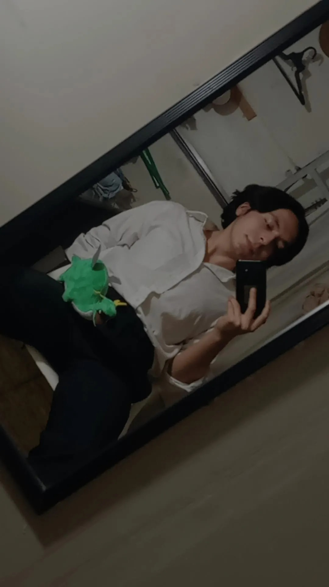
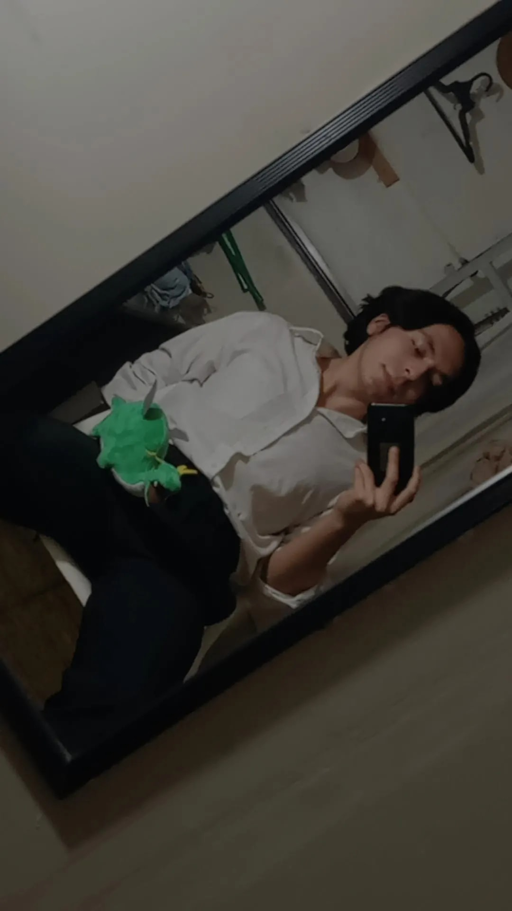

SOBRE MI
Hola! Mi nombre es Angel Eduardo, aunque muchos (casi todos) me llaman Muñoz, actualmente tengo 22 años y me encuentro escribiendo una descripción propia para este blog mi, la verdad nunca me imaginé que algún día llegaria a esta situación, asi que, no se muy bien que escribir. La verdad es que no creo que mi yo de chico podría haber predicho o sentido que terminara haciendo las cosas que hago actualmente. Desde pequeño he tenido muchas afiliaciones y gustos muy variados. Desde que tengo memoria me ha gustado dibujar mucho, y he dibujado mucho y muchas cosas, desde los garabatos mas abstractos que un crio de 4 años pudiese congeniar, hasta grandes paisajes, personas, escenas, cosas anatómicas y muchos personajes, pero muchos personajes. Viendo muchos cuadernos antiguos donde arrastre el lapiz buscando ideas para rellenar este blog he recordado muchas cosas que me atraían desde joven, por ejemplo, me llego el recuerdo que desde primaria me gustaba mucho el espacio, todo el cosmos y la astrofísica en general me parecía muy atrapante y bella, tambien al ver pequeñas maquetas a pliegos de papel que hacia por mera diversión veo que me gustaba la anatomia del cuerpo humano, recuerdo como con entusiasmo recreaba los sistemas respiratorios, digestivos o circulatorios a partir de hojitas y dibujos que doblaba para que al desdoblar pudieses ver lo que habia en el interior como si un corte transversal o disección se refiriese. también vemos muchos dibujos de otras cosas como Michael Jackson, Spiderman o incluso anime, que son cosas que ya sea a mayor o menor medida siguen siendo cosas que ha dia de hoy me gustan y consumo gratamente. Así que con todo este baúl de recuerdos que extiendo en estos parrafos de texto me pongo a dibujar un retrato mio compuesto no de lineas o trazos y colores, si no de ideas y palabras de aquello que me describe y no necesariamente de forma fisica.

 
